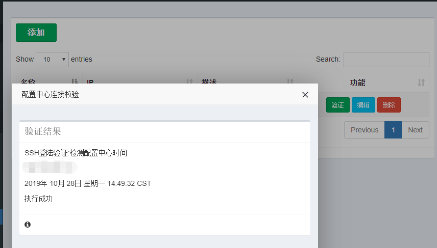

3. 快速入门¶
3.1. 步骤¶
3.1.1. 基本使用流程¶
{kind=link}
注解
审核流程非必须，若为开启审核功能，用户提单后可以直接执行和返回执行结果
快速入门手册没有开启审核流程，假设运维和提单人员为同一人，都用管理员账号配置。
关于审核流程配置详见：用户手册》用户系统》审核流程配置
3.1.3. 工单配置流程¶
配置中心初始化
用途分类配置
工单变量注册
工单变量分组
工单插件注册
注解
若ansible或相关插件执行服务器与skstack在同一台服务器 则不需要进行配置中心初始化工作
3.2. 创建菜单和用户并授权¶
{kind=link}
{kind=link}
3.3. 创建一个ansible任务工单¶
3.3.1. 效果展示¶
{kind=link}
注解
AnsibleCMD为用户需要输入的shell命令
AnsibleHosts为用户选择需要执行shell命令的目标主机
执行结果将基于xterm样式 websocket实时输出
3.3.2. 插件环境基础配置¶
ansible安装：略
插件安装：执行 git clone 《插件git url》，注意：插件安装到ansible服务器/opt/soft目录
该插件与skstack web系统使用同一python虚拟机环境
配置demo1作为ansible 远程执行命令的客户机 作为测试：略
3.3.3. ansible cmd插件测试¶
(skstack) [root@devops pl_ansible]# more ./conf/dev_conf.json
{
"ansible_hosts_file":"/etc/ansible/hosts",
"forks":"5"
}
(skstack) [root@devops pl_ansible]# python main_ansible_shell.py -e dev -g demo1 -c date
2020-01-07 17:56:59.115794 INFO the ansible shell task started
svn | CHANGED | rc=0 >>
2020年 01月 07日 星期二 17:57:00 CST
2020-01-07 17:57:00.947437 INFO the ansible shell task finished
(skstack) [root@devops pl_ansible]#
注解
该处–e表示读取./conf/dev_conf.json 配置文件 -g表示项目名称 -c表示执行的shell命令
确认ansible hosts变量获取脚本工作正常,
(skstack) [root@devops pl_ansible]# python vars_get_AnsibleHosts.py -e dev
['demo1', 'demo2', 'dev_nginx']
注解
该处-e参数为获取不同环境的配置文件参数；该处–e表示读取./conf/dev_conf.json 配置文件。
执行结果返回/etc/ansible/hosts下的group列表清单表示工作正常
3.3.4. 添加配置中心¶
注解
若ansible或相关插件执行服务器与skstack在同一台服务器 则不需要进行配置中心添加工作
skstack和ansible和插件工具工作原理，详见快速入门 概述章节内容。
skstack支持添加多个配置中心：如不同环境使用不同的ansible作为配置管理服务器。
工单系统》配置》配置中心》添加
{kind=link}
添加完毕点击验证按钮能够获取到配置中心时间表示配置成功，如下截图
{kind=link}
3.3.5. 添加用途分类¶

3.3.6. 工单变量注册¶
{kind=link}
{kind=link}
注册自定义文本输入框变量，用于输入shell命令，如web效果展示的AnsibleHosts选项
{kind=link}
{kind=link}
{kind=link}
{kind=link}
{kind=link}
{kind=link}